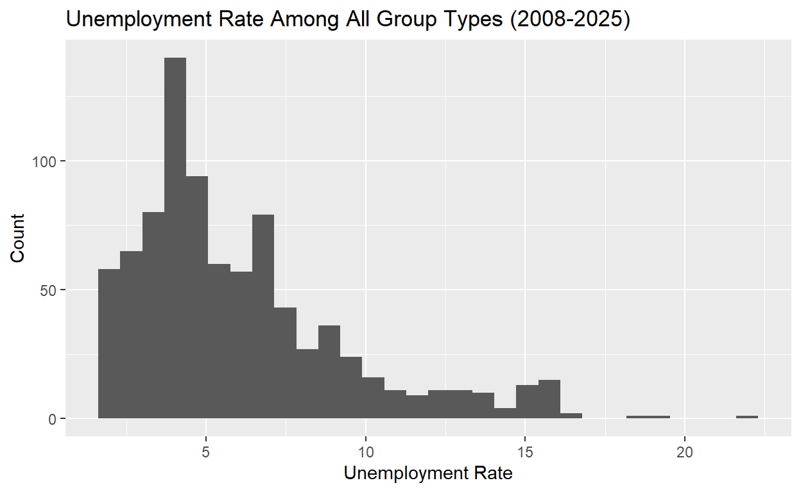
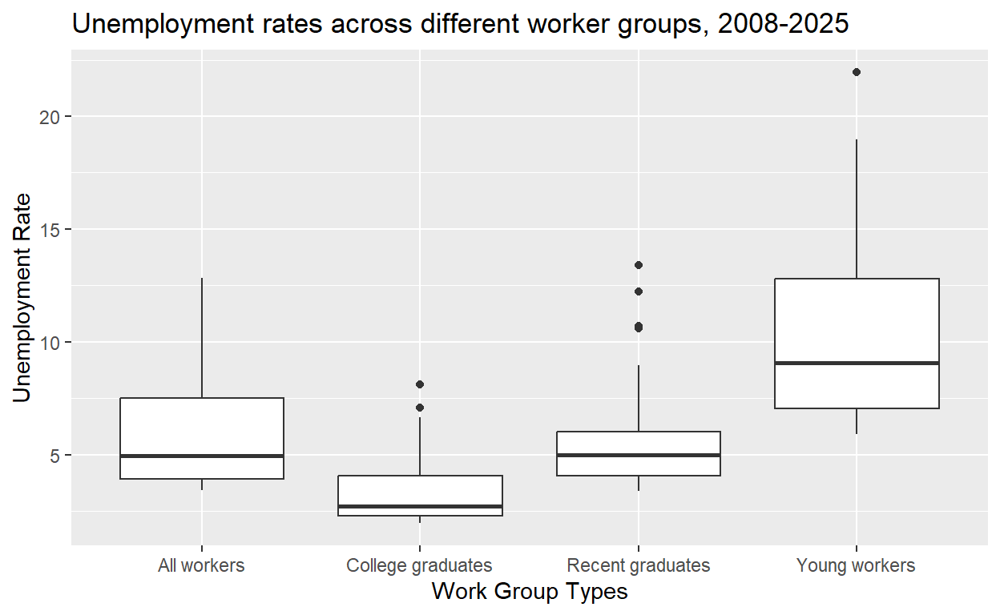
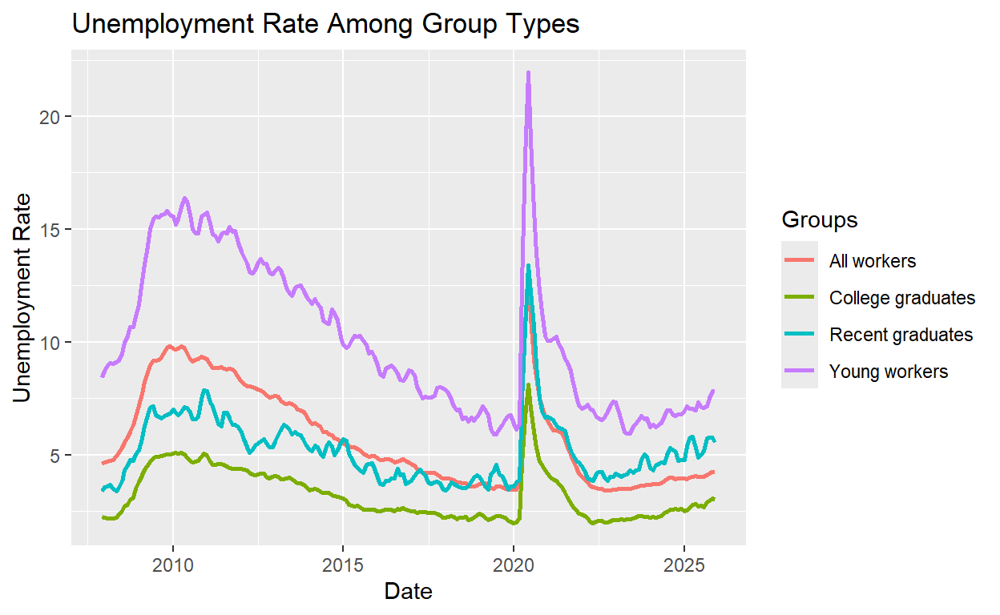

Comparing unemployment rates among recent college grads to other labor market group types over the passage of time from 2008 to 2025.
Today, anxiety and uncertainty follows recent college graduates as they navigate the college labor market. In a “Current Population Survey” from the U.S. Census Bureau and U.S. Bureau of Labor Statistics, it was interpreted by the Federal Reserve Bank of New York that unemployment rates for recent college graduates climbed to 5 percent in July 2025, and have stayed above it since then. At the end of 2025, the unemployment rate for recent college graduates was 5.6 percent.
(Source here: https://www.newyorkfed.org/research/college-labor-market#--:explore:unemployment)
This raises a point of interest that I am exploring in my project. With this anxiety surrounding recent college graduates and their increasing risk of unemployment, I am interested in exploring data related to recent college graduates and other group types with the type of unemployment rate they have. My research question is, how has the passage of time post-2008 changed the recent graduate unemployment rate with other group types over time? My hypothesis is that the passage of time post-2008 will show a pattern that the recent graduate unemployment rate increased more than other groups over time.
My outcome variable of interest is the unemployment rate percent. This is measured by measuring what specific group (in this case recent college grads) and the percentage of them that are willing to and able to work but are currently without a paid job. The explanatory variable is the rate type. An observed pattern in the data that would prove my hypothesis would be recent college graduates having a higher unemployment rate among the other groups studied, over the passage of time since 2008. A pattern that would disprove my hypothesis would be recent college graduates having a lower unemployment rate among the other groups studied over the passage of time since 2008.
The data file is “College-labor-data.xlsx”, and contains the following variables:
| Name | Description |
|---|---|
| Date | The date, measured in months, ranging from 1990-01-01 to 2025-12-01. This is modified to only include 2008-01-01 to 2025-12-01 in this project. |
| Unemployment rate | Percentage of people in data that are willing and able to work but are currently without a paid job. |
| Young workers | Those aged 22 to 27 without a bachelor’s degree. |
| All workers | Workers aged 16 to 65. |
| College graduates | Those aged 22 to 65 with a bachelor’s degree or higher. |
| Recent college graduates | Those aged 22 to 27 with a bachelor’s degree or higher. |
Note: All figures exclude those currently enrolled in school.
knitr::kable(college_labor)| Date | group | unemployment_rate |
|---|---|---|
| 2007-12-01 | Recent graduates | 3.410 |
| 2007-12-01 | Young workers | 8.452 |
| 2007-12-01 | All workers | 4.603 |
| 2007-12-01 | College graduates | 2.251 |
| 2008-01-01 | Recent graduates | 3.587 |
| 2008-01-01 | Young workers | 8.714 |
| 2008-01-01 | All workers | 4.657 |
| 2008-01-01 | College graduates | 2.243 |
| 2008-02-01 | Recent graduates | 3.625 |
| 2008-02-01 | Young workers | 8.982 |
| 2008-02-01 | All workers | 4.713 |
| 2008-02-01 | College graduates | 2.201 |
| 2008-03-01 | Recent graduates | 3.677 |
| 2008-03-01 | Young workers | 9.088 |
| 2008-03-01 | All workers | 4.763 |
| 2008-03-01 | College graduates | 2.185 |
| 2008-04-01 | Recent graduates | 3.512 |
| 2008-04-01 | Young workers | 9.034 |
| 2008-04-01 | All workers | 4.798 |
| 2008-04-01 | College graduates | 2.181 |
| 2008-05-01 | Recent graduates | 3.401 |
| 2008-05-01 | Young workers | 9.105 |
| 2008-05-01 | All workers | 4.946 |
| 2008-05-01 | College graduates | 2.230 |
| 2008-06-01 | Recent graduates | 3.539 |
| 2008-06-01 | Young workers | 9.196 |
| 2008-06-01 | All workers | 5.087 |
| 2008-06-01 | College graduates | 2.362 |
| 2008-07-01 | Recent graduates | 3.828 |
| 2008-07-01 | Young workers | 9.500 |
| 2008-07-01 | All workers | 5.315 |
| 2008-07-01 | College graduates | 2.520 |
| 2008-08-01 | Recent graduates | 4.304 |
| 2008-08-01 | Young workers | 9.944 |
| 2008-08-01 | All workers | 5.564 |
| 2008-08-01 | College graduates | 2.738 |
| 2008-09-01 | Recent graduates | 4.545 |
| 2008-09-01 | Young workers | 10.293 |
| 2008-09-01 | All workers | 5.775 |
| 2008-09-01 | College graduates | 2.807 |
| 2008-10-01 | Recent graduates | 4.779 |
| 2008-10-01 | Young workers | 10.659 |
| 2008-10-01 | All workers | 6.030 |
| 2008-10-01 | College graduates | 3.000 |
| 2008-11-01 | Recent graduates | 4.760 |
| 2008-11-01 | Young workers | 10.676 |
| 2008-11-01 | All workers | 6.295 |
| 2008-11-01 | College graduates | 3.130 |
| 2008-12-01 | Recent graduates | 5.040 |
| 2008-12-01 | Young workers | 11.123 |
| 2008-12-01 | All workers | 6.688 |
| 2008-12-01 | College graduates | 3.491 |
| 2009-01-01 | Recent graduates | 5.222 |
| 2009-01-01 | Young workers | 11.671 |
| 2009-01-01 | All workers | 7.184 |
| 2009-01-01 | College graduates | 3.787 |
| 2009-02-01 | Recent graduates | 5.756 |
| 2009-02-01 | Young workers | 12.742 |
| 2009-02-01 | All workers | 7.722 |
| 2009-02-01 | College graduates | 4.121 |
| 2009-03-01 | Recent graduates | 6.270 |
| 2009-03-01 | Young workers | 13.434 |
| 2009-03-01 | All workers | 8.231 |
| 2009-03-01 | College graduates | 4.359 |
| 2009-04-01 | Recent graduates | 6.779 |
| 2009-04-01 | Young workers | 14.267 |
| 2009-04-01 | All workers | 8.632 |
| 2009-04-01 | College graduates | 4.518 |
| 2009-05-01 | Recent graduates | 7.102 |
| 2009-05-01 | Young workers | 14.992 |
| 2009-05-01 | All workers | 8.975 |
| 2009-05-01 | College graduates | 4.726 |
| 2009-06-01 | Recent graduates | 7.160 |
| 2009-06-01 | Young workers | 15.444 |
| 2009-06-01 | All workers | 9.170 |
| 2009-06-01 | College graduates | 4.869 |
| 2009-07-01 | Recent graduates | 6.764 |
| 2009-07-01 | Young workers | 15.557 |
| 2009-07-01 | All workers | 9.188 |
| 2009-07-01 | College graduates | 4.916 |
| 2009-08-01 | Recent graduates | 6.684 |
| 2009-08-01 | Young workers | 15.514 |
| 2009-08-01 | All workers | 9.203 |
| 2009-08-01 | College graduates | 4.912 |
| 2009-09-01 | Recent graduates | 6.608 |
| 2009-09-01 | Young workers | 15.638 |
| 2009-09-01 | All workers | 9.309 |
| 2009-09-01 | College graduates | 4.960 |
| 2009-10-01 | Recent graduates | 6.729 |
| 2009-10-01 | Young workers | 15.660 |
| 2009-10-01 | All workers | 9.575 |
| 2009-10-01 | College graduates | 5.011 |
| 2009-11-01 | Recent graduates | 6.759 |
| 2009-11-01 | Young workers | 15.821 |
| 2009-11-01 | All workers | 9.749 |
| 2009-11-01 | College graduates | 5.033 |
| 2009-12-01 | Recent graduates | 6.841 |
| 2009-12-01 | Young workers | 15.632 |
| 2009-12-01 | All workers | 9.801 |
| 2009-12-01 | College graduates | 5.039 |
| 2010-01-01 | Recent graduates | 7.016 |
| 2010-01-01 | Young workers | 15.563 |
| 2010-01-01 | All workers | 9.719 |
| 2010-01-01 | College graduates | 5.071 |
| 2010-02-01 | Recent graduates | 6.886 |
| 2010-02-01 | Young workers | 15.201 |
| 2010-02-01 | All workers | 9.668 |
| 2010-02-01 | College graduates | 5.102 |
| 2010-03-01 | Recent graduates | 6.766 |
| 2010-03-01 | Young workers | 15.474 |
| 2010-03-01 | All workers | 9.695 |
| 2010-03-01 | College graduates | 5.079 |
| 2010-04-01 | Recent graduates | 6.916 |
| 2010-04-01 | Young workers | 15.984 |
| 2010-04-01 | All workers | 9.807 |
| 2010-04-01 | College graduates | 5.097 |
| 2010-05-01 | Recent graduates | 7.128 |
| 2010-05-01 | Young workers | 16.382 |
| 2010-05-01 | All workers | 9.751 |
| 2010-05-01 | College graduates | 5.016 |
| 2010-06-01 | Recent graduates | 7.088 |
| 2010-06-01 | Young workers | 16.245 |
| 2010-06-01 | All workers | 9.522 |
| 2010-06-01 | College graduates | 4.873 |
| 2010-07-01 | Recent graduates | 6.924 |
| 2010-07-01 | Young workers | 15.651 |
| 2010-07-01 | All workers | 9.241 |
| 2010-07-01 | College graduates | 4.741 |
| 2010-08-01 | Recent graduates | 6.584 |
| 2010-08-01 | Young workers | 14.984 |
| 2010-08-01 | All workers | 9.156 |
| 2010-08-01 | College graduates | 4.686 |
| 2010-09-01 | Recent graduates | 6.581 |
| 2010-09-01 | Young workers | 14.821 |
| 2010-09-01 | All workers | 9.224 |
| 2010-09-01 | College graduates | 4.697 |
| 2010-10-01 | Recent graduates | 6.684 |
| 2010-10-01 | Young workers | 14.830 |
| 2010-10-01 | All workers | 9.244 |
| 2010-10-01 | College graduates | 4.742 |
| 2010-11-01 | Recent graduates | 7.474 |
| 2010-11-01 | Young workers | 15.565 |
| 2010-11-01 | All workers | 9.365 |
| 2010-11-01 | College graduates | 4.939 |
| 2010-12-01 | Recent graduates | 7.876 |
| 2010-12-01 | Young workers | 15.636 |
| 2010-12-01 | All workers | 9.315 |
| 2010-12-01 | College graduates | 5.060 |
| 2011-01-01 | Recent graduates | 7.828 |
| 2011-01-01 | Young workers | 15.740 |
| 2011-01-01 | All workers | 9.251 |
| 2011-01-01 | College graduates | 4.982 |
| 2011-02-01 | Recent graduates | 7.340 |
| 2011-02-01 | Young workers | 15.248 |
| 2011-02-01 | All workers | 9.002 |
| 2011-02-01 | College graduates | 4.718 |
| 2011-03-01 | Recent graduates | 7.175 |
| 2011-03-01 | Young workers | 14.784 |
| 2011-03-01 | All workers | 8.856 |
| 2011-03-01 | College graduates | 4.569 |
| 2011-04-01 | Recent graduates | 6.747 |
| 2011-04-01 | Young workers | 14.667 |
| 2011-04-01 | All workers | 8.865 |
| 2011-04-01 | College graduates | 4.562 |
| 2011-05-01 | Recent graduates | 6.390 |
| 2011-05-01 | Young workers | 14.469 |
| 2011-05-01 | All workers | 8.847 |
| 2011-05-01 | College graduates | 4.610 |
| 2011-06-01 | Recent graduates | 6.279 |
| 2011-06-01 | Young workers | 14.784 |
| 2011-06-01 | All workers | 8.892 |
| 2011-06-01 | College graduates | 4.599 |
| 2011-07-01 | Recent graduates | 6.861 |
| 2011-07-01 | Young workers | 14.841 |
| 2011-07-01 | All workers | 8.830 |
| 2011-07-01 | College graduates | 4.575 |
| 2011-08-01 | Recent graduates | 6.888 |
| 2011-08-01 | Young workers | 14.808 |
| 2011-08-01 | All workers | 8.798 |
| 2011-08-01 | College graduates | 4.492 |
| 2011-09-01 | Recent graduates | 6.634 |
| 2011-09-01 | Young workers | 15.122 |
| 2011-09-01 | All workers | 8.837 |
| 2011-09-01 | College graduates | 4.412 |
| 2011-10-01 | Recent graduates | 6.352 |
| 2011-10-01 | Young workers | 14.889 |
| 2011-10-01 | All workers | 8.778 |
| 2011-10-01 | College graduates | 4.382 |
| 2011-11-01 | Recent graduates | 6.332 |
| 2011-11-01 | Young workers | 14.921 |
| 2011-11-01 | All workers | 8.674 |
| 2011-11-01 | College graduates | 4.392 |
| 2011-12-01 | Recent graduates | 6.238 |
| 2011-12-01 | Young workers | 14.395 |
| 2011-12-01 | All workers | 8.436 |
| 2011-12-01 | College graduates | 4.395 |
| 2012-01-01 | Recent graduates | 6.035 |
| 2012-01-01 | Young workers | 14.020 |
| 2012-01-01 | All workers | 8.244 |
| 2012-01-01 | College graduates | 4.404 |
| 2012-02-01 | Recent graduates | 5.706 |
| 2012-02-01 | Young workers | 13.803 |
| 2012-02-01 | All workers | 8.136 |
| 2012-02-01 | College graduates | 4.352 |
| 2012-03-01 | Recent graduates | 5.354 |
| 2012-03-01 | Young workers | 13.519 |
| 2012-03-01 | All workers | 8.060 |
| 2012-03-01 | College graduates | 4.318 |
| 2012-04-01 | Recent graduates | 5.093 |
| 2012-04-01 | Young workers | 13.108 |
| 2012-04-01 | All workers | 8.043 |
| 2012-04-01 | College graduates | 4.223 |
| 2012-05-01 | Recent graduates | 5.243 |
| 2012-05-01 | Young workers | 13.044 |
| 2012-05-01 | All workers | 8.011 |
| 2012-05-01 | College graduates | 4.160 |
| 2012-06-01 | Recent graduates | 5.420 |
| 2012-06-01 | Young workers | 13.195 |
| 2012-06-01 | All workers | 7.962 |
| 2012-06-01 | College graduates | 4.119 |
| 2012-07-01 | Recent graduates | 5.520 |
| 2012-07-01 | Young workers | 13.547 |
| 2012-07-01 | All workers | 7.920 |
| 2012-07-01 | College graduates | 4.130 |
| 2012-08-01 | Recent graduates | 5.607 |
| 2012-08-01 | Young workers | 13.703 |
| 2012-08-01 | All workers | 7.855 |
| 2012-08-01 | College graduates | 4.164 |
| 2012-09-01 | Recent graduates | 5.689 |
| 2012-09-01 | Young workers | 13.486 |
| 2012-09-01 | All workers | 7.763 |
| 2012-09-01 | College graduates | 4.164 |
| 2012-10-01 | Recent graduates | 5.533 |
| 2012-10-01 | Young workers | 13.487 |
| 2012-10-01 | All workers | 7.666 |
| 2012-10-01 | College graduates | 4.040 |
| 2012-11-01 | Recent graduates | 5.363 |
| 2012-11-01 | Young workers | 13.066 |
| 2012-11-01 | All workers | 7.551 |
| 2012-11-01 | College graduates | 3.981 |
| 2012-12-01 | Recent graduates | 5.363 |
| 2012-12-01 | Young workers | 13.016 |
| 2012-12-01 | All workers | 7.580 |
| 2012-12-01 | College graduates | 4.030 |
| 2013-01-01 | Recent graduates | 5.586 |
| 2013-01-01 | Young workers | 13.138 |
| 2013-01-01 | All workers | 7.613 |
| 2013-01-01 | College graduates | 4.069 |
| 2013-02-01 | Recent graduates | 5.865 |
| 2013-02-01 | Young workers | 13.287 |
| 2013-02-01 | All workers | 7.571 |
| 2013-02-01 | College graduates | 4.051 |
| 2013-03-01 | Recent graduates | 6.097 |
| 2013-03-01 | Young workers | 13.174 |
| 2013-03-01 | All workers | 7.415 |
| 2013-03-01 | College graduates | 3.924 |
| 2013-04-01 | Recent graduates | 6.333 |
| 2013-04-01 | Young workers | 12.802 |
| 2013-04-01 | All workers | 7.284 |
| 2013-04-01 | College graduates | 3.940 |
| 2013-05-01 | Recent graduates | 6.267 |
| 2013-05-01 | Young workers | 12.391 |
| 2013-05-01 | All workers | 7.271 |
| 2013-05-01 | College graduates | 3.956 |
| 2013-06-01 | Recent graduates | 6.138 |
| 2013-06-01 | Young workers | 12.161 |
| 2013-06-01 | All workers | 7.308 |
| 2013-06-01 | College graduates | 3.984 |
| 2013-07-01 | Recent graduates | 5.919 |
| 2013-07-01 | Young workers | 12.065 |
| 2013-07-01 | All workers | 7.247 |
| 2013-07-01 | College graduates | 3.933 |
| 2013-08-01 | Recent graduates | 6.009 |
| 2013-08-01 | Young workers | 12.406 |
| 2013-08-01 | All workers | 7.143 |
| 2013-08-01 | College graduates | 3.808 |
| 2013-09-01 | Recent graduates | 5.926 |
| 2013-09-01 | Young workers | 12.492 |
| 2013-09-01 | All workers | 7.005 |
| 2013-09-01 | College graduates | 3.744 |
| 2013-10-01 | Recent graduates | 5.872 |
| 2013-10-01 | Young workers | 12.502 |
| 2013-10-01 | All workers | 6.990 |
| 2013-10-01 | College graduates | 3.735 |
| 2013-11-01 | Recent graduates | 5.644 |
| 2013-11-01 | Young workers | 12.276 |
| 2013-11-01 | All workers | 6.913 |
| 2013-11-01 | College graduates | 3.679 |
| 2013-12-01 | Recent graduates | 5.431 |
| 2013-12-01 | Young workers | 12.023 |
| 2013-12-01 | All workers | 6.749 |
| 2013-12-01 | College graduates | 3.581 |
| 2014-01-01 | Recent graduates | 5.251 |
| 2014-01-01 | Young workers | 11.852 |
| 2014-01-01 | All workers | 6.490 |
| 2014-01-01 | College graduates | 3.443 |
| 2014-02-01 | Recent graduates | 5.186 |
| 2014-02-01 | Young workers | 11.699 |
| 2014-02-01 | All workers | 6.394 |
| 2014-02-01 | College graduates | 3.454 |
| 2014-03-01 | Recent graduates | 5.422 |
| 2014-03-01 | Young workers | 11.911 |
| 2014-03-01 | All workers | 6.424 |
| 2014-03-01 | College graduates | 3.489 |
| 2014-04-01 | Recent graduates | 5.343 |
| 2014-04-01 | Young workers | 11.698 |
| 2014-04-01 | All workers | 6.351 |
| 2014-04-01 | College graduates | 3.454 |
| 2014-05-01 | Recent graduates | 5.017 |
| 2014-05-01 | Young workers | 11.513 |
| 2014-05-01 | All workers | 6.225 |
| 2014-05-01 | College graduates | 3.370 |
| 2014-06-01 | Recent graduates | 4.920 |
| 2014-06-01 | Young workers | 10.943 |
| 2014-06-01 | All workers | 6.022 |
| 2014-06-01 | College graduates | 3.320 |
| 2014-07-01 | Recent graduates | 5.393 |
| 2014-07-01 | Young workers | 10.842 |
| 2014-07-01 | All workers | 6.005 |
| 2014-07-01 | College graduates | 3.315 |
| 2014-08-01 | Recent graduates | 5.557 |
| 2014-08-01 | Young workers | 10.822 |
| 2014-08-01 | All workers | 5.912 |
| 2014-08-01 | College graduates | 3.317 |
| 2014-09-01 | Recent graduates | 5.379 |
| 2014-09-01 | Young workers | 11.446 |
| 2014-09-01 | All workers | 5.881 |
| 2014-09-01 | College graduates | 3.222 |
| 2014-10-01 | Recent graduates | 5.001 |
| 2014-10-01 | Young workers | 11.276 |
| 2014-10-01 | All workers | 5.735 |
| 2014-10-01 | College graduates | 3.178 |
| 2014-11-01 | Recent graduates | 5.223 |
| 2014-11-01 | Young workers | 10.963 |
| 2014-11-01 | All workers | 5.686 |
| 2014-11-01 | College graduates | 3.161 |
| 2014-12-01 | Recent graduates | 5.570 |
| 2014-12-01 | Young workers | 10.208 |
| 2014-12-01 | All workers | 5.547 |
| 2014-12-01 | College graduates | 3.131 |
| 2015-01-01 | Recent graduates | 5.699 |
| 2015-01-01 | Young workers | 9.904 |
| 2015-01-01 | All workers | 5.522 |
| 2015-01-01 | College graduates | 3.090 |
| 2015-02-01 | Recent graduates | 5.621 |
| 2015-02-01 | Young workers | 9.738 |
| 2015-02-01 | All workers | 5.422 |
| 2015-02-01 | College graduates | 2.986 |
| 2015-03-01 | Recent graduates | 5.077 |
| 2015-03-01 | Young workers | 9.830 |
| 2015-03-01 | All workers | 5.390 |
| 2015-03-01 | College graduates | 2.799 |
| 2015-04-01 | Recent graduates | 4.800 |
| 2015-04-01 | Young workers | 10.105 |
| 2015-04-01 | All workers | 5.338 |
| 2015-04-01 | College graduates | 2.744 |
| 2015-05-01 | Recent graduates | 4.578 |
| 2015-05-01 | Young workers | 10.277 |
| 2015-05-01 | All workers | 5.353 |
| 2015-05-01 | College graduates | 2.728 |
| 2015-06-01 | Recent graduates | 4.441 |
| 2015-06-01 | Young workers | 10.242 |
| 2015-06-01 | All workers | 5.268 |
| 2015-06-01 | College graduates | 2.748 |
| 2015-07-01 | Recent graduates | 4.337 |
| 2015-07-01 | Young workers | 10.290 |
| 2015-07-01 | All workers | 5.207 |
| 2015-07-01 | College graduates | 2.677 |
| 2015-08-01 | Recent graduates | 4.224 |
| 2015-08-01 | Young workers | 10.057 |
| 2015-08-01 | All workers | 5.055 |
| 2015-08-01 | College graduates | 2.572 |
| 2015-09-01 | Recent graduates | 4.558 |
| 2015-09-01 | Young workers | 9.900 |
| 2015-09-01 | All workers | 4.998 |
| 2015-09-01 | College graduates | 2.584 |
| 2015-10-01 | Recent graduates | 4.588 |
| 2015-10-01 | Young workers | 9.499 |
| 2015-10-01 | All workers | 4.938 |
| 2015-10-01 | College graduates | 2.575 |
| 2015-11-01 | Recent graduates | 4.651 |
| 2015-11-01 | Young workers | 9.570 |
| 2015-11-01 | All workers | 4.942 |
| 2015-11-01 | College graduates | 2.596 |
| 2015-12-01 | Recent graduates | 4.380 |
| 2015-12-01 | Young workers | 9.357 |
| 2015-12-01 | All workers | 4.950 |
| 2015-12-01 | College graduates | 2.565 |
| 2016-01-01 | Recent graduates | 3.983 |
| 2016-01-01 | Young workers | 8.968 |
| 2016-01-01 | All workers | 4.858 |
| 2016-01-01 | College graduates | 2.528 |
| 2016-02-01 | Recent graduates | 3.721 |
| 2016-02-01 | Young workers | 8.589 |
| 2016-02-01 | All workers | 4.774 |
| 2016-02-01 | College graduates | 2.505 |
| 2016-03-01 | Recent graduates | 3.681 |
| 2016-03-01 | Young workers | 8.457 |
| 2016-03-01 | All workers | 4.764 |
| 2016-03-01 | College graduates | 2.551 |
| 2016-04-01 | Recent graduates | 3.842 |
| 2016-04-01 | Young workers | 8.822 |
| 2016-04-01 | All workers | 4.834 |
| 2016-04-01 | College graduates | 2.587 |
| 2016-05-01 | Recent graduates | 3.859 |
| 2016-05-01 | Young workers | 8.902 |
| 2016-05-01 | All workers | 4.817 |
| 2016-05-01 | College graduates | 2.578 |
| 2016-06-01 | Recent graduates | 3.974 |
| 2016-06-01 | Young workers | 8.963 |
| 2016-06-01 | All workers | 4.769 |
| 2016-06-01 | College graduates | 2.572 |
| 2016-07-01 | Recent graduates | 3.981 |
| 2016-07-01 | Young workers | 8.827 |
| 2016-07-01 | All workers | 4.677 |
| 2016-07-01 | College graduates | 2.520 |
| 2016-08-01 | Recent graduates | 4.374 |
| 2016-08-01 | Young workers | 8.603 |
| 2016-08-01 | All workers | 4.707 |
| 2016-08-01 | College graduates | 2.611 |
| 2016-09-01 | Recent graduates | 4.094 |
| 2016-09-01 | Young workers | 8.313 |
| 2016-09-01 | All workers | 4.742 |
| 2016-09-01 | College graduates | 2.597 |
| 2016-10-01 | Recent graduates | 4.145 |
| 2016-10-01 | Young workers | 8.299 |
| 2016-10-01 | All workers | 4.810 |
| 2016-10-01 | College graduates | 2.667 |
| 2016-11-01 | Recent graduates | 3.707 |
| 2016-11-01 | Young workers | 8.428 |
| 2016-11-01 | All workers | 4.761 |
| 2016-11-01 | College graduates | 2.564 |
| 2016-12-01 | Recent graduates | 3.773 |
| 2016-12-01 | Young workers | 8.763 |
| 2016-12-01 | All workers | 4.686 |
| 2016-12-01 | College graduates | 2.560 |
| 2017-01-01 | Recent graduates | 3.850 |
| 2017-01-01 | Young workers | 8.705 |
| 2017-01-01 | All workers | 4.592 |
| 2017-01-01 | College graduates | 2.519 |
| 2017-02-01 | Recent graduates | 4.070 |
| 2017-02-01 | Young workers | 8.527 |
| 2017-02-01 | All workers | 4.529 |
| 2017-02-01 | College graduates | 2.496 |
| 2017-03-01 | Recent graduates | 4.227 |
| 2017-03-01 | Young workers | 8.052 |
| 2017-03-01 | All workers | 4.404 |
| 2017-03-01 | College graduates | 2.454 |
| 2017-04-01 | Recent graduates | 4.350 |
| 2017-04-01 | Young workers | 7.722 |
| 2017-04-01 | All workers | 4.289 |
| 2017-04-01 | College graduates | 2.463 |
| 2017-05-01 | Recent graduates | 4.216 |
| 2017-05-01 | Young workers | 7.528 |
| 2017-05-01 | All workers | 4.229 |
| 2017-05-01 | College graduates | 2.481 |
| 2017-06-01 | Recent graduates | 4.054 |
| 2017-06-01 | Young workers | 7.593 |
| 2017-06-01 | All workers | 4.213 |
| 2017-06-01 | College graduates | 2.476 |
| 2017-07-01 | Recent graduates | 3.784 |
| 2017-07-01 | Young workers | 7.541 |
| 2017-07-01 | All workers | 4.226 |
| 2017-07-01 | College graduates | 2.425 |
| 2017-08-01 | Recent graduates | 3.723 |
| 2017-08-01 | Young workers | 7.551 |
| 2017-08-01 | All workers | 4.231 |
| 2017-08-01 | College graduates | 2.430 |
| 2017-09-01 | Recent graduates | 3.801 |
| 2017-09-01 | Young workers | 7.619 |
| 2017-09-01 | All workers | 4.230 |
| 2017-09-01 | College graduates | 2.449 |
| 2017-10-01 | Recent graduates | 3.840 |
| 2017-10-01 | Young workers | 7.962 |
| 2017-10-01 | All workers | 4.144 |
| 2017-10-01 | College graduates | 2.411 |
| 2017-11-01 | Recent graduates | 3.767 |
| 2017-11-01 | Young workers | 8.001 |
| 2017-11-01 | All workers | 4.051 |
| 2017-11-01 | College graduates | 2.318 |
| 2017-12-01 | Recent graduates | 3.493 |
| 2017-12-01 | Young workers | 7.964 |
| 2017-12-01 | All workers | 3.973 |
| 2017-12-01 | College graduates | 2.234 |
| 2018-01-01 | Recent graduates | 3.435 |
| 2018-01-01 | Young workers | 7.854 |
| 2018-01-01 | All workers | 3.975 |
| 2018-01-01 | College graduates | 2.225 |
| 2018-02-01 | Recent graduates | 3.545 |
| 2018-02-01 | Young workers | 7.769 |
| 2018-02-01 | All workers | 3.958 |
| 2018-02-01 | College graduates | 2.268 |
| 2018-03-01 | Recent graduates | 3.776 |
| 2018-03-01 | Young workers | 7.433 |
| 2018-03-01 | All workers | 3.921 |
| 2018-03-01 | College graduates | 2.287 |
| 2018-04-01 | Recent graduates | 3.713 |
| 2018-04-01 | Young workers | 7.155 |
| 2018-04-01 | All workers | 3.880 |
| 2018-04-01 | College graduates | 2.246 |
| 2018-05-01 | Recent graduates | 3.651 |
| 2018-05-01 | Young workers | 6.970 |
| 2018-05-01 | All workers | 3.803 |
| 2018-05-01 | College graduates | 2.165 |
| 2018-06-01 | Recent graduates | 3.567 |
| 2018-06-01 | Young workers | 7.025 |
| 2018-06-01 | All workers | 3.803 |
| 2018-06-01 | College graduates | 2.209 |
| 2018-07-01 | Recent graduates | 3.538 |
| 2018-07-01 | Young workers | 6.600 |
| 2018-07-01 | All workers | 3.753 |
| 2018-07-01 | College graduates | 2.235 |
| 2018-08-01 | Recent graduates | 3.525 |
| 2018-08-01 | Young workers | 6.651 |
| 2018-08-01 | All workers | 3.742 |
| 2018-08-01 | College graduates | 2.253 |
| 2018-09-01 | Recent graduates | 3.604 |
| 2018-09-01 | Young workers | 6.477 |
| 2018-09-01 | All workers | 3.644 |
| 2018-09-01 | College graduates | 2.137 |
| 2018-10-01 | Recent graduates | 3.828 |
| 2018-10-01 | Young workers | 6.666 |
| 2018-10-01 | All workers | 3.623 |
| 2018-10-01 | College graduates | 2.142 |
| 2018-11-01 | Recent graduates | 3.991 |
| 2018-11-01 | Young workers | 6.511 |
| 2018-11-01 | All workers | 3.601 |
| 2018-11-01 | College graduates | 2.216 |
| 2018-12-01 | Recent graduates | 4.097 |
| 2018-12-01 | Young workers | 6.687 |
| 2018-12-01 | All workers | 3.655 |
| 2018-12-01 | College graduates | 2.326 |
| 2019-01-01 | Recent graduates | 4.053 |
| 2019-01-01 | Young workers | 6.853 |
| 2019-01-01 | All workers | 3.730 |
| 2019-01-01 | College graduates | 2.387 |
| 2019-02-01 | Recent graduates | 3.840 |
| 2019-02-01 | Young workers | 7.153 |
| 2019-02-01 | All workers | 3.758 |
| 2019-02-01 | College graduates | 2.334 |
| 2019-03-01 | Recent graduates | 3.602 |
| 2019-03-01 | Young workers | 7.015 |
| 2019-03-01 | All workers | 3.749 |
| 2019-03-01 | College graduates | 2.229 |
| 2019-04-01 | Recent graduates | 3.472 |
| 2019-04-01 | Young workers | 6.751 |
| 2019-04-01 | All workers | 3.604 |
| 2019-04-01 | College graduates | 2.131 |
| 2019-05-01 | Recent graduates | 4.130 |
| 2019-05-01 | Young workers | 6.168 |
| 2019-05-01 | All workers | 3.555 |
| 2019-05-01 | College graduates | 2.167 |
| 2019-06-01 | Recent graduates | 4.269 |
| 2019-06-01 | Young workers | 5.909 |
| 2019-06-01 | All workers | 3.514 |
| 2019-06-01 | College graduates | 2.218 |
| 2019-07-01 | Recent graduates | 4.569 |
| 2019-07-01 | Young workers | 5.927 |
| 2019-07-01 | All workers | 3.602 |
| 2019-07-01 | College graduates | 2.293 |
| 2019-08-01 | Recent graduates | 4.154 |
| 2019-08-01 | Young workers | 6.147 |
| 2019-08-01 | All workers | 3.606 |
| 2019-08-01 | College graduates | 2.292 |
| 2019-09-01 | Recent graduates | 4.040 |
| 2019-09-01 | Young workers | 6.330 |
| 2019-09-01 | All workers | 3.583 |
| 2019-09-01 | College graduates | 2.274 |
| 2019-10-01 | Recent graduates | 3.781 |
| 2019-10-01 | Young workers | 6.570 |
| 2019-10-01 | All workers | 3.502 |
| 2019-10-01 | College graduates | 2.220 |
| 2019-11-01 | Recent graduates | 3.485 |
| 2019-11-01 | Young workers | 6.740 |
| 2019-11-01 | All workers | 3.464 |
| 2019-11-01 | College graduates | 2.096 |
| 2019-12-01 | Recent graduates | 3.604 |
| 2019-12-01 | Young workers | 6.778 |
| 2019-12-01 | All workers | 3.454 |
| 2019-12-01 | College graduates | 2.061 |
| 2020-01-01 | Recent graduates | 3.609 |
| 2020-01-01 | Young workers | 6.370 |
| 2020-01-01 | All workers | 3.467 |
| 2020-01-01 | College graduates | 1.993 |
| 2020-02-01 | Recent graduates | 3.779 |
| 2020-02-01 | Young workers | 6.115 |
| 2020-02-01 | All workers | 3.466 |
| 2020-02-01 | College graduates | 2.011 |
| 2020-03-01 | Recent graduates | 3.879 |
| 2020-03-01 | Young workers | 6.382 |
| 2020-03-01 | All workers | 3.717 |
| 2020-03-01 | College graduates | 2.177 |
| 2020-04-01 | Recent graduates | 7.432 |
| 2020-04-01 | Young workers | 12.624 |
| 2020-04-01 | All workers | 7.524 |
| 2020-04-01 | College graduates | 4.616 |
| 2020-05-01 | Recent graduates | 10.610 |
| 2020-05-01 | Young workers | 18.183 |
| 2020-05-01 | All workers | 10.866 |
| 2020-05-01 | College graduates | 6.646 |
| 2020-06-01 | Recent graduates | 13.413 |
| 2020-06-01 | Young workers | 21.955 |
| 2020-06-01 | All workers | 12.849 |
| 2020-06-01 | College graduates | 8.108 |
| 2020-07-01 | Recent graduates | 12.246 |
| 2020-07-01 | Young workers | 18.964 |
| 2020-07-01 | All workers | 11.043 |
| 2020-07-01 | College graduates | 7.071 |
| 2020-08-01 | Recent graduates | 10.709 |
| 2020-08-01 | Young workers | 15.820 |
| 2020-08-01 | All workers | 9.198 |
| 2020-08-01 | College graduates | 6.021 |
| 2020-09-01 | Recent graduates | 8.967 |
| 2020-09-01 | Young workers | 13.918 |
| 2020-09-01 | All workers | 8.432 |
| 2020-09-01 | College graduates | 5.313 |
| 2020-10-01 | Recent graduates | 7.523 |
| 2020-10-01 | Young workers | 12.276 |
| 2020-10-01 | All workers | 7.520 |
| 2020-10-01 | College graduates | 4.725 |
| 2020-11-01 | Recent graduates | 6.934 |
| 2020-11-01 | Young workers | 11.331 |
| 2020-11-01 | All workers | 7.146 |
| 2020-11-01 | College graduates | 4.561 |
| 2020-12-01 | Recent graduates | 6.677 |
| 2020-12-01 | Young workers | 10.290 |
| 2020-12-01 | All workers | 6.718 |
| 2020-12-01 | College graduates | 4.303 |
| 2021-01-01 | Recent graduates | 6.694 |
| 2021-01-01 | Young workers | 10.077 |
| 2021-01-01 | All workers | 6.533 |
| 2021-01-01 | College graduates | 4.184 |
| 2021-02-01 | Recent graduates | 6.630 |
| 2021-02-01 | Young workers | 10.066 |
| 2021-02-01 | All workers | 6.278 |
| 2021-02-01 | College graduates | 4.009 |
| 2021-03-01 | Recent graduates | 6.544 |
| 2021-03-01 | Young workers | 10.123 |
| 2021-03-01 | All workers | 6.079 |
| 2021-03-01 | College graduates | 3.935 |
| 2021-04-01 | Recent graduates | 6.292 |
| 2021-04-01 | Young workers | 10.258 |
| 2021-04-01 | All workers | 6.092 |
| 2021-04-01 | College graduates | 3.841 |
| 2021-05-01 | Recent graduates | 6.196 |
| 2021-05-01 | Young workers | 9.909 |
| 2021-05-01 | All workers | 6.073 |
| 2021-05-01 | College graduates | 3.702 |
| 2021-06-01 | Recent graduates | 6.182 |
| 2021-06-01 | Young workers | 9.672 |
| 2021-06-01 | All workers | 5.970 |
| 2021-06-01 | College graduates | 3.585 |
| 2021-07-01 | Recent graduates | 6.058 |
| 2021-07-01 | Young workers | 9.262 |
| 2021-07-01 | All workers | 5.656 |
| 2021-07-01 | College graduates | 3.334 |
| 2021-08-01 | Recent graduates | 5.650 |
| 2021-08-01 | Young workers | 9.080 |
| 2021-08-01 | All workers | 5.338 |
| 2021-08-01 | College graduates | 3.104 |
| 2021-09-01 | Recent graduates | 5.212 |
| 2021-09-01 | Young workers | 8.702 |
| 2021-09-01 | All workers | 5.043 |
| 2021-09-01 | College graduates | 2.860 |
| 2021-10-01 | Recent graduates | 4.981 |
| 2021-10-01 | Young workers | 8.193 |
| 2021-10-01 | All workers | 4.756 |
| 2021-10-01 | College graduates | 2.693 |
| 2021-11-01 | Recent graduates | 4.757 |
| 2021-11-01 | Young workers | 7.591 |
| 2021-11-01 | All workers | 4.473 |
| 2021-11-01 | College graduates | 2.557 |
| 2021-12-01 | Recent graduates | 4.679 |
| 2021-12-01 | Young workers | 7.182 |
| 2021-12-01 | All workers | 4.179 |
| 2021-12-01 | College graduates | 2.415 |
| 2022-01-01 | Recent graduates | 4.490 |
| 2022-01-01 | Young workers | 7.054 |
| 2022-01-01 | All workers | 4.034 |
| 2022-01-01 | College graduates | 2.368 |
| 2022-02-01 | Recent graduates | 4.235 |
| 2022-02-01 | Young workers | 7.110 |
| 2022-02-01 | All workers | 3.897 |
| 2022-02-01 | College graduates | 2.304 |
| 2022-03-01 | Recent graduates | 3.956 |
| 2022-03-01 | Young workers | 7.213 |
| 2022-03-01 | All workers | 3.801 |
| 2022-03-01 | College graduates | 2.174 |
| 2022-04-01 | Recent graduates | 3.933 |
| 2022-04-01 | Young workers | 7.056 |
| 2022-04-01 | All workers | 3.658 |
| 2022-04-01 | College graduates | 2.064 |
| 2022-05-01 | Recent graduates | 3.863 |
| 2022-05-01 | Young workers | 6.965 |
| 2022-05-01 | All workers | 3.557 |
| 2022-05-01 | College graduates | 1.969 |
| 2022-06-01 | Recent graduates | 4.190 |
| 2022-06-01 | Young workers | 6.690 |
| 2022-06-01 | All workers | 3.531 |
| 2022-06-01 | College graduates | 2.061 |
| 2022-07-01 | Recent graduates | 4.240 |
| 2022-07-01 | Young workers | 6.608 |
| 2022-07-01 | All workers | 3.493 |
| 2022-07-01 | College graduates | 2.084 |
| 2022-08-01 | Recent graduates | 4.264 |
| 2022-08-01 | Young workers | 6.569 |
| 2022-08-01 | All workers | 3.499 |
| 2022-08-01 | College graduates | 2.100 |
| 2022-09-01 | Recent graduates | 4.003 |
| 2022-09-01 | Young workers | 6.664 |
| 2022-09-01 | All workers | 3.422 |
| 2022-09-01 | College graduates | 2.011 |
| 2022-10-01 | Recent graduates | 3.875 |
| 2022-10-01 | Young workers | 6.904 |
| 2022-10-01 | All workers | 3.446 |
| 2022-10-01 | College graduates | 1.998 |
| 2022-11-01 | Recent graduates | 4.035 |
| 2022-11-01 | Young workers | 7.149 |
| 2022-11-01 | All workers | 3.439 |
| 2022-11-01 | College graduates | 2.050 |
| 2022-12-01 | Recent graduates | 4.050 |
| 2022-12-01 | Young workers | 7.373 |
| 2022-12-01 | All workers | 3.483 |
| 2022-12-01 | College graduates | 2.106 |
| 2023-01-01 | Recent graduates | 4.163 |
| 2023-01-01 | Young workers | 7.322 |
| 2023-01-01 | All workers | 3.468 |
| 2023-01-01 | College graduates | 2.124 |
| 2023-02-01 | Recent graduates | 4.098 |
| 2023-02-01 | Young workers | 6.916 |
| 2023-02-01 | All workers | 3.491 |
| 2023-02-01 | College graduates | 2.115 |
| 2023-03-01 | Recent graduates | 4.027 |
| 2023-03-01 | Young workers | 6.508 |
| 2023-03-01 | All workers | 3.520 |
| 2023-03-01 | College graduates | 2.140 |
| 2023-04-01 | Recent graduates | 4.108 |
| 2023-04-01 | Young workers | 6.009 |
| 2023-04-01 | All workers | 3.489 |
| 2023-04-01 | College graduates | 2.137 |
| 2023-05-01 | Recent graduates | 4.160 |
| 2023-05-01 | Young workers | 5.953 |
| 2023-05-01 | All workers | 3.508 |
| 2023-05-01 | College graduates | 2.163 |
| 2023-06-01 | Recent graduates | 4.330 |
| 2023-06-01 | Young workers | 5.936 |
| 2023-06-01 | All workers | 3.496 |
| 2023-06-01 | College graduates | 2.156 |
| 2023-07-01 | Recent graduates | 4.228 |
| 2023-07-01 | Young workers | 6.257 |
| 2023-07-01 | All workers | 3.542 |
| 2023-07-01 | College graduates | 2.179 |
| 2023-08-01 | Recent graduates | 4.303 |
| 2023-08-01 | Young workers | 6.389 |
| 2023-08-01 | All workers | 3.559 |
| 2023-08-01 | College graduates | 2.230 |
| 2023-09-01 | Recent graduates | 4.372 |
| 2023-09-01 | Young workers | 6.561 |
| 2023-09-01 | All workers | 3.617 |
| 2023-09-01 | College graduates | 2.290 |
| 2023-10-01 | Recent graduates | 4.772 |
| 2023-10-01 | Young workers | 6.743 |
| 2023-10-01 | All workers | 3.655 |
| 2023-10-01 | College graduates | 2.301 |
| 2023-11-01 | Recent graduates | 5.019 |
| 2023-11-01 | Young workers | 6.586 |
| 2023-11-01 | All workers | 3.652 |
| 2023-11-01 | College graduates | 2.277 |
| 2023-12-01 | Recent graduates | 4.917 |
| 2023-12-01 | Young workers | 6.621 |
| 2023-12-01 | All workers | 3.678 |
| 2023-12-01 | College graduates | 2.261 |
| 2024-01-01 | Recent graduates | 4.415 |
| 2024-01-01 | Young workers | 6.237 |
| 2024-01-01 | All workers | 3.687 |
| 2024-01-01 | College graduates | 2.240 |
| 2024-02-01 | Recent graduates | 4.317 |
| 2024-02-01 | Young workers | 6.340 |
| 2024-02-01 | All workers | 3.719 |
| 2024-02-01 | College graduates | 2.257 |
| 2024-03-01 | Recent graduates | 4.548 |
| 2024-03-01 | Young workers | 6.222 |
| 2024-03-01 | All workers | 3.707 |
| 2024-03-01 | College graduates | 2.231 |
| 2024-04-01 | Recent graduates | 4.602 |
| 2024-04-01 | Young workers | 6.353 |
| 2024-04-01 | All workers | 3.724 |
| 2024-04-01 | College graduates | 2.278 |
| 2024-05-01 | Recent graduates | 4.659 |
| 2024-05-01 | Young workers | 6.427 |
| 2024-05-01 | All workers | 3.760 |
| 2024-05-01 | College graduates | 2.315 |
| 2024-06-01 | Recent graduates | 4.647 |
| 2024-06-01 | Young workers | 6.716 |
| 2024-06-01 | All workers | 3.842 |
| 2024-06-01 | College graduates | 2.422 |
| 2024-07-01 | Recent graduates | 4.996 |
| 2024-07-01 | Young workers | 6.990 |
| 2024-07-01 | All workers | 3.945 |
| 2024-07-01 | College graduates | 2.481 |
| 2024-08-01 | Recent graduates | 5.306 |
| 2024-08-01 | Young workers | 6.964 |
| 2024-08-01 | All workers | 3.994 |
| 2024-08-01 | College graduates | 2.570 |
| 2024-09-01 | Recent graduates | 5.249 |
| 2024-09-01 | Young workers | 6.787 |
| 2024-09-01 | All workers | 3.983 |
| 2024-09-01 | College graduates | 2.565 |
| 2024-10-01 | Recent graduates | 5.147 |
| 2024-10-01 | Young workers | 6.742 |
| 2024-10-01 | All workers | 3.939 |
| 2024-10-01 | College graduates | 2.610 |
| 2024-11-01 | Recent graduates | 4.761 |
| 2024-11-01 | Young workers | 6.808 |
| 2024-11-01 | All workers | 3.972 |
| 2024-11-01 | College graduates | 2.593 |
| 2024-12-01 | Recent graduates | 4.787 |
| 2024-12-01 | Young workers | 6.815 |
| 2024-12-01 | All workers | 3.979 |
| 2024-12-01 | College graduates | 2.601 |
| 2025-01-01 | Recent graduates | 4.794 |
| 2025-01-01 | Young workers | 6.951 |
| 2025-01-01 | All workers | 3.981 |
| 2025-01-01 | College graduates | 2.518 |
| 2025-02-01 | Recent graduates | 5.395 |
| 2025-02-01 | Young workers | 7.152 |
| 2025-02-01 | All workers | 3.943 |
| 2025-02-01 | College graduates | 2.546 |
| 2025-03-01 | Recent graduates | 5.724 |
| 2025-03-01 | Young workers | 7.060 |
| 2025-03-01 | All workers | 3.987 |
| 2025-03-01 | College graduates | 2.650 |
| 2025-04-01 | Recent graduates | 5.821 |
| 2025-04-01 | Young workers | 7.043 |
| 2025-04-01 | All workers | 4.053 |
| 2025-04-01 | College graduates | 2.782 |
| 2025-05-01 | Recent graduates | 5.318 |
| 2025-05-01 | Young workers | 6.989 |
| 2025-05-01 | All workers | 4.076 |
| 2025-05-01 | College graduates | 2.843 |
| 2025-06-01 | Recent graduates | 4.876 |
| 2025-06-01 | Young workers | 7.340 |
| 2025-06-01 | All workers | 4.047 |
| 2025-06-01 | College graduates | 2.727 |
| 2025-07-01 | Recent graduates | 5.043 |
| 2025-07-01 | Young workers | 7.118 |
| 2025-07-01 | All workers | 4.039 |
| 2025-07-01 | College graduates | 2.756 |
| 2025-08-01 | Recent graduates | 5.159 |
| 2025-08-01 | Young workers | 7.085 |
| 2025-08-01 | All workers | 4.034 |
| 2025-08-01 | College graduates | 2.703 |
| 2025-09-01 | Recent graduates | 5.739 |
| 2025-09-01 | Young workers | 7.146 |
| 2025-09-01 | All workers | 4.115 |
| 2025-09-01 | College graduates | 2.912 |
| 2025-10-01 | Recent graduates | 5.771 |
| 2025-10-01 | Young workers | 7.516 |
| 2025-10-01 | All workers | 4.172 |
| 2025-10-01 | College graduates | 2.969 |
| 2025-11-01 | Recent graduates | 5.757 |
| 2025-11-01 | Young workers | 7.828 |
| 2025-11-01 | All workers | 4.260 |
| 2025-11-01 | College graduates | 3.072 |
| 2025-12-01 | Recent graduates | 5.563 |
| 2025-12-01 | Young workers | 7.832 |
| 2025-12-01 | All workers | 4.249 |
| 2025-12-01 | College graduates | 3.059 |
Let’s visualize the unemployment data among all the group types using a histogram for the unemployment rate.
ggplot(college_labor,
aes(x = unemployment_rate)) +
geom_histogram() +
labs( x = "Unemployment Rate",
y = "Count",
title = "Unemployment Rate Among All Group Types (2008-2025)" )
From this histogram, it can be observed the unemployment rate from all group types throughout passage of time post-2008 to December of 2025 most commonly fell below five percent. This means that, from 2008 to 2025, the most common unemployment rate among all group types in the survey was around three or four percent.
Now, let’s plot the unemployment rates on a boxplot and compare unemployment rates across the different worker groups:
ggplot(college_labor,
aes(x = group, y = unemployment_rate)) +
geom_boxplot() +
labs( x = "Work Group Types",
y = "Unemployment Rate",
title = "Unemployment rates across different worker groups, 2008-2025")
For aesthetics, let’s also plot this on a line graph:
college_labor |>
ggplot(mapping = aes(x = `Date`, y = unemployment_rate, color = group)) +
geom_line(linewidth = 1.0) +
labs( x = "Date",
y = "Unemployment Rate",
title = "Unemployment Rate Among Group Types",
color = "Groups")
collegelabor.reg <- lm(unemployment_rate ~ Date + group, data = college_labor)
summary(collegelabor.reg)
Call:
lm(formula = unemployment_rate ~ Date + group, data = college_labor)
Residuals:
Min 1Q Median 3Q Max
-3.7404 -1.1409 -0.2263 0.9005 12.6467
Coefficients:
Estimate Std. Error t value Pr(>|t|)
(Intercept) 1.593e+01 5.887e-01 27.053 < 2e-16 ***
Date -6.871e-09 3.881e-10 -17.702 < 2e-16 ***
groupCollege graduates -2.537e+00 1.808e-01 -14.029 < 2e-16 ***
groupRecent graduates -5.544e-01 1.808e-01 -3.065 0.00224 **
groupYoung workers 4.314e+00 1.808e-01 23.855 < 2e-16 ***
---
Signif. codes: 0 '***' 0.001 '**' 0.01 '*' 0.05 '.' 0.1 ' ' 1
Residual standard error: 1.884 on 863 degrees of freedom
Multiple R-squared: 0.6809, Adjusted R-squared: 0.6794
F-statistic: 460.3 on 4 and 863 DF, p-value: < 2.2e-16From the results of the boxplot and line graph, it can be observed that young workers have the highest unemployment rate and greatest variablity. This indicates they have the most unstable and highest rates of unemployment out of all other group types observed throughout 2008 to 2025. College graduates have the lowest unemployment rate and lowest variablity, meaning they have the lowest and most stable unemployment rates out of all group types observed throughout 2008 to 2025. Specifically from the boxplot, it can be observed that Recent graduates fall in between, experiencing higher unemployment than College graduates but less than Young workers overtime. The All workers category falls in the middle and reflects the overall labor market throughout 2008 to 2025. The large amount of outliers in the Young workers and Recent graduates suggests periods of unusually high unemployment, reflecting economic crises like the Great Recession and COVID-19 pandemic. From the line graph it can be observed that after the COVID-19 pandemic, Young workers and Recent graduates became the two group types with the highest rate of unemployment, with Recent graduates surpassing the baseline unemployment rate for All workers.
The regression results show that unemployment rate varies across the group types and throughout the passage of time from 2008 to 2025, specifically that Young workers had the highest unemployment rate and College graduates had the lowest unemployment rate throughout this time frame. Using All workers as the reference category, the intercept represents the baseline unemployment rate for this group type.The main coefficient of interest is date. The negative coefficient on the Date variable suggests that unemployment rates slightly decreased throughout the passage of time from 2008 to 2025, holding group types constant. Compared to the baseline group, college graduates have significantly lower unemployment rates, around 2.5 percentage points less on average. Recent graduates also have lower unemployment rates, but only slightly, around 0.554 percentage points less than the baseline group. In contrast, Young workers experience significantly higher unemployment rates, with rates over 4 percentage points higher than the baseline group. All group coefficients are statistically significant at a p-value of 0.00224, which indicates strong evidence that the unemployment rates overtime from 2008 to 2025 differ across the different group types. The regression also has relatively small standard errors. The small standard errors indicate that the estimated differences in unemployment have a low level of uncertainty. For example, the estimate difference in the unemployment rate for Young workers is 4.314, much larger than its standard error of 0.18.
While the regression shows strong differences between these group types, these results should be interpreted as associations rather than causations, because factors such as work experience or job type might also influence employment.
We observe a difference of _____ with a p-value of 2.2e-16, providing extremely strong evidence for against the null hypothesis.
Statistically significant? Causal interpretation? Discuss standard errors and p-value as well.
1 paragraph (i) summarizing results and assessing the extent to which you find support for your hypothesis;
From the results of this research project, it can concluded that the unemployment rate for recent college graduates compared to other group types was lower than . It seems that this graph would answer my research question but disprove my hypothesis that the passage of time post-2008 will show a pattern that the recent graduate unemployment rate increased more than other groups over time. From my research, I can now say that the unemployment rate for recent college graduates did not increase the most throughout the passage of time compared to all other group types.
However, there were some limitations and threats to inference to this analysis.
and stating how you could improve your analysis if you had more time/money:
If I had more time and perhaps more money, I would want to research directly how the great recession and COVID-19 pandemic impacted the unemployment rates for younger workers. Splitting this into more specific parts, like job type, to see what groups in younger workers were impacted and to what degree. I would also want to further research the unemployment rate for recent graduates overtaking the baseline unemployment rate for all workers around